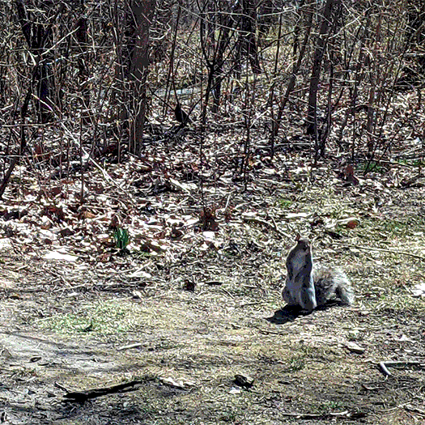

these days i stay the heck away from Cyberspace...it's not the same since the Cosmodrome... too many g*d damn
wizards aroundand wizard apologists...but g*sh it's lonely out here... it's so different out here to how it used to be. it used to be a
real frolic... now all my friends are jacked in 12 hours a day in some netcafe or else they're
working for the wizards at the Cosmodrome
please don't leave me here alone... won't you please take me with you?